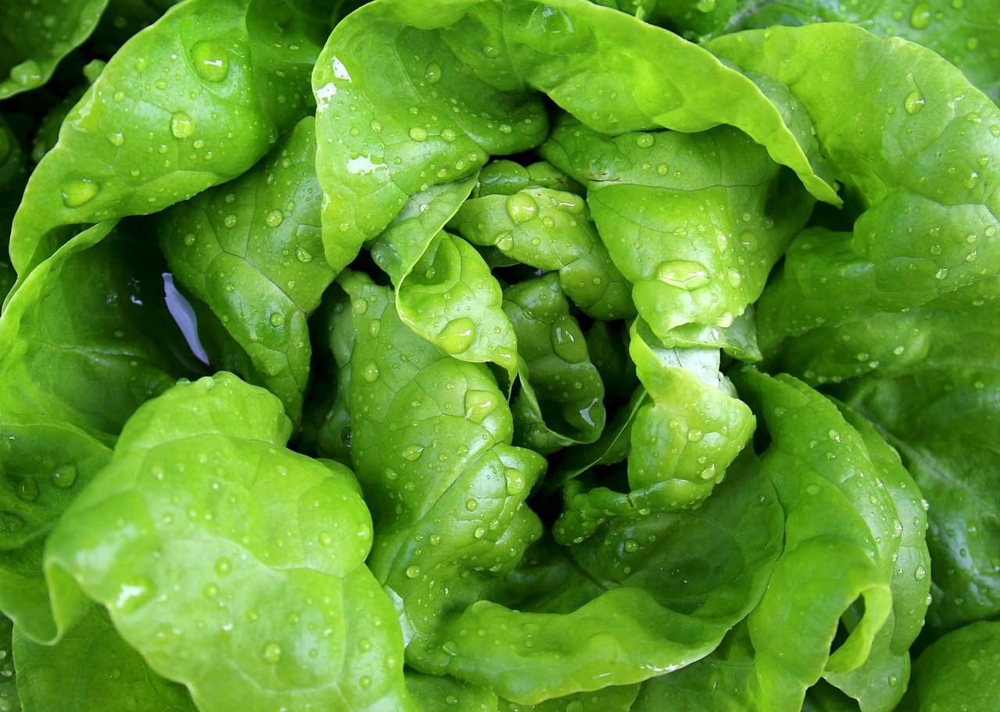
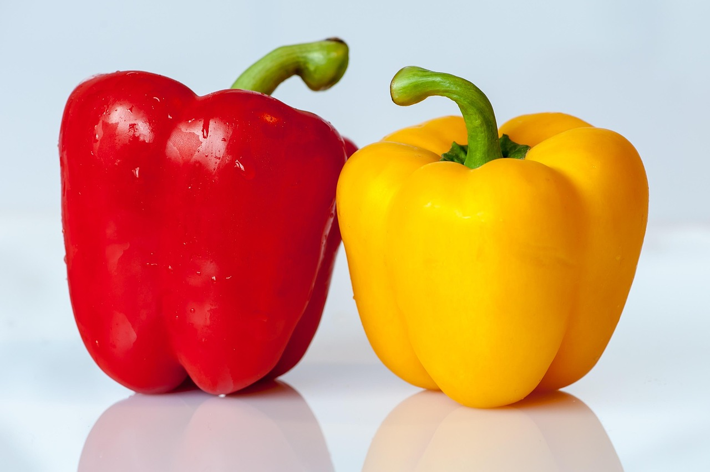

Popular Vegetables to Grow
Plant in full sun and well-drained soil for juicy fruits.
 LettuceGrow in cool weather with consistent watering for crisp leaves.
 Carrots
Carrots
Plant in loose, sandy soil for straight and healthy roots.
 PeppersRequire warm soil and plenty of sunlight for colorful peppers.
Vegetable Gardening Tips
Growing vegetables can be a rewarding experience, providing fresh produce right from your garden. Start by selecting vegetables that are well-suited to your climate and soil type. Most vegetables thrive in well-drained soil with plenty of organic matter, so consider adding compost or aged manure to enrich the soil before planting. Ensure your vegetable garden receives at least 6-8 hours of direct sunlight daily, as this is crucial for healthy growth and fruit production.
Regular watering is essential, especially during dry spells. Aim to keep the soil consistently moist but not waterlogged. Mulching around your plants can help retain moisture, suppress weeds, and regulate soil temperature. Additionally, practice crop rotation each season to prevent soil depletion and reduce the risk of pests and diseases. Keep an eye out for common vegetable pests like aphids and caterpillars, and use organic pest control methods when necessary. With patience and care, you can enjoy a bountiful harvest of homegrown vegetables.